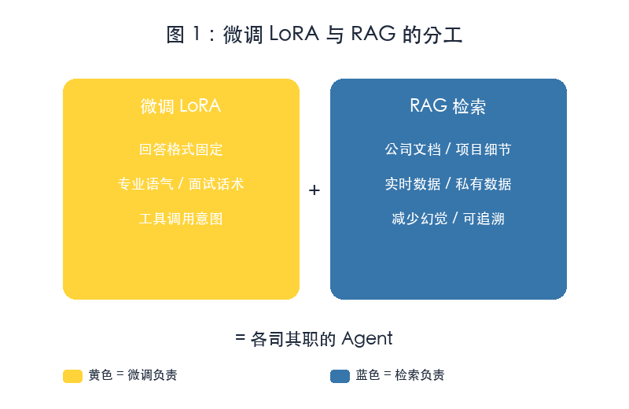
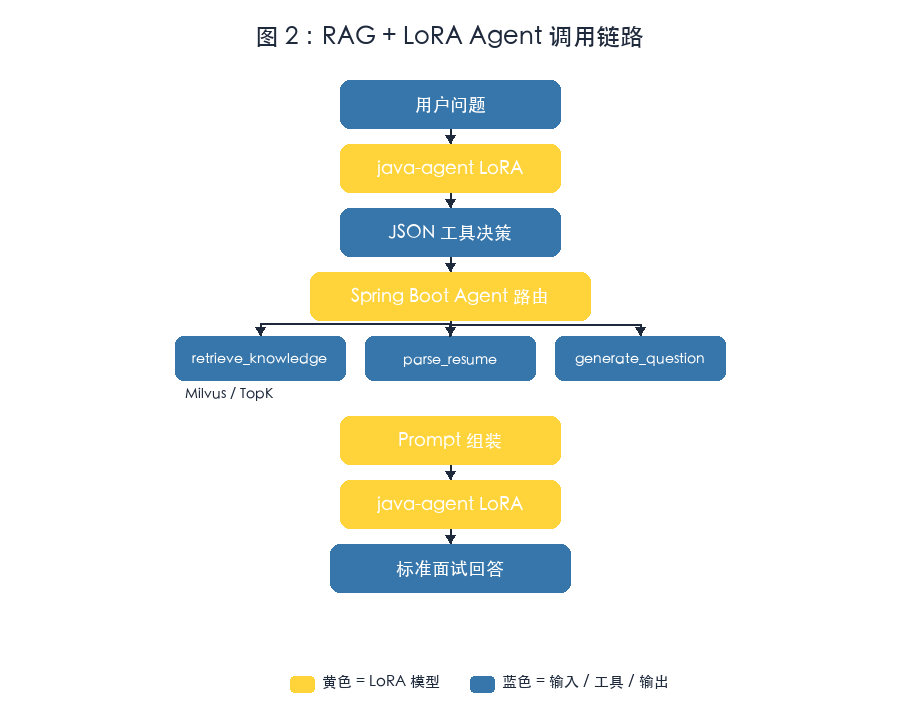

大模型微调实战 Day4：RAG + LoRA 结合，构建带工具调用的 Agent
写给有 Java / 后端基础、已经能把 LoRA 接进 Ollama 的开发者。 今天解决一个企业级 AI 应用的核心问题：让模型既懂「怎么答」，又能查「答什么」。 文中架构图与流程图为本教程自制示意框图；代码块为可执行片段，真实输出请在本地环境验证。
一、今天要做出什么
前一篇我们把 Qwen + Java Interview LoRA 接进了 Ollama 和 Spring Boot。今天给它加上 RAG 检索和工具调用，让它从「会按 Java 面试格式说话的模型」升级成一个真正的 Agent。
最终形态：
用户提问
↓
Spring Boot Agent 服务
├─ 检索知识库（RAG）
├─ 调用简历解析工具
├─ 调用评分工具
└─ 汇总给 LoRA 模型生成回答
↓
标准面试风格的最终答案核心认知：
LoRA 负责：回答格式、专业口吻、工具调用意图
RAG 负责：公司文档、实时知识、项目细节
Agent 负责：拆解任务、选择工具、串联结果二、先搞懂：为什么要把「知识」和「行为」分开
很多初学者第一反应是：「能不能把公司文档也微调进 LoRA？」理论上可以，但不推荐。
2.1 微调记住知识的代价
| 问题 | 说明 |
|---|---|
| 数据更新成本高 | 每次文档变更都要重新准备训练数据、重新训练 |
| 幻觉难控制 | 模型可能「记错」或「编造」细节 |
| 训练集难覆盖 | 公司文档、接口文档、实时数据不可能全部入训练集 |
2.2 RAG 提供知识的优势
文档更新 → 重新切分、重新入库 → 模型立刻可见- 不需要重训模型
- 答案可追溯
- 实时数据、私有数据都能接
2.3 两者的分工边界

图 1：微调负责「格式与意图」，RAG 负责「知识与上下文」
| 能力 | 微调 LoRA | RAG |
|---|---|---|
| 回答格式 / 语气 / 工具意图 | ✅ | ❌ |
| 公司文档 / 实时数据 / 减少幻觉 | ❌ | ✅ |
[!NOTE] 一句话总结 让 LoRA 学会「怎么说」和「调什么工具」，让 RAG 告诉它「说什么」。
三、Step1：训练一个「只负责格式与工具」的 LoRA
今天训练的 LoRA 不负责背面试题，只负责两件事：
- 识别用户问题需要调用哪些工具；
- 按固定格式输出工具调用决策，或把检索结果组织成标准面试回答。
3.1 训练数据长什么样
格式和 Day1 一致，但样本重点变了。一条示意样本：
{
"instruction": "判断是否需要检索知识库，并输出工具调用决策。",
"input": "HashMap 为什么线程不安全？",
"output": "{\"thought\": \"Java 基础题，需要检索后按面试格式回答。\", \"tools\": [\"retrieve_knowledge\"], \"query\": \"HashMap 线程不安全原因\"}"
}类似地，「根据简历生成面试题」对应 "tools": ["parse_resume"]，「分析项目经历」对应 "tools": ["retrieve_knowledge", "parse_resume"]。
关键点：样本不直接给答案原文，而是给出「工具调用决策」，让模型在 Spring Boot 侧和 RAG / 工具链配合。
3.2 LLaMA-Factory 配置
数据存为 tool_agent_train.json，新建 agent_lora.yaml：
model_name_or_path: Qwen/Qwen2.5-3B-Instruct
finetuning_type: lora
lora_target: all
output_dir: output/java-agent-lora
dataset: tool_agent_train
num_train_epochs: 3
per_device_train_batch_size: 1
gradient_accumulation_steps: 8
learning_rate: 5.0e-5
lr_scheduler_type: cosine
logging_steps: 10
save_steps: 100
warmup_steps: 100
bf16: true
ddo: false运行：
llamafactory-cli train agent_lora.yaml[!WARN] 不要编造输出 训练时间、显存占用、loss 曲线请在本地 Colab / GPU 查看。本教程只给配置骨架。
3.3 合并并导出为 GGUF
和 Day3 相同，先合并：
from transformers import AutoModelForCausalLM, AutoTokenizer
from peft import PeftModel
base = "Qwen/Qwen2.5-3B-Instruct"
adapter = "./output/java-agent-lora"
model = AutoModelForCausalLM.from_pretrained(base, device_map="auto")
model = PeftModel.from_pretrained(model, adapter)
model = model.merge_and_unload()
model.save_pretrained("./java-agent-qwen")
tokenizer = AutoTokenizer.from_pretrained(base)
tokenizer.save_pretrained("./java-agent-qwen")再转 GGUF 并导入 Ollama：
python convert_hf_to_gguf.py \
./java-agent-qwen \
--outfile java-agent.ggufFROM ./java-agent.gguf
PARAMETER temperature 0.3
SYSTEM """
你是一名 Java 面试 Agent。
根据用户问题决定调用什么工具，输出合法 JSON，包含 thought、tools、query 字段。
"""ollama create java-agent -f Modelfile
ollama list四、Step2：用 RAG 提供知识
模型会输出 "tools": ["retrieve_knowledge"] 和 query。接下来让 Spring Boot 真的把知识找回来。
4.1 准备知识库
按主题放 Markdown 文档：
knowledge/
├── java/
│ ├── hashmap.md
│ ├── concurrenthashmap.md
│ └── jvm.md
├── ai/
│ ├── rag.md
│ └── agent.md
└── project/
└── order-system.md4.2 文档切片 Chunk
RAG 不会把整个文件塞进 Prompt。常见参数：chunk_size 500~1000 tokens，overlap 100~200 tokens。可以用 RecursiveCharacterTextSplitter 按标题、段落、句子多级切分。
4.3 Embedding 与向量库
Chunk
↓
Embedding 模型（如 nomic-embed-text）
↓
768 / 1024 维向量
↓
Milvus 向量库LangChain4j 关键 Bean：
@Bean
EmbeddingModel embeddingModel() {
return OllamaEmbeddingModel.builder()
.baseUrl("http://localhost:11434")
.modelName("nomic-embed-text")
.build();
}
@Bean
EmbeddingStore<TextSegment> embeddingStore() {
return MilvusEmbeddingStore.builder()
.host("localhost")
.port(19530)
.dimension(768)
.build();
}[!NOTE] Embedding 模型也走 Ollama
nomic-embed-text体积很小，本地 Mac 即可运行。和 LLM 分开管理，避免互相抢占资源。
五、Step3：在 Spring Boot 里把两者串成 Agent
5.1 完整调用链路

图 2：Spring Boot Agent 控制流——先让 LoRA 决策工具，再执行 RAG / 工具，最后把结果交给 LoRA 生成回答
用户问题
↓
java-agent（LoRA 模型）
↓
JSON 工具决策（thought + tools + query）
↓
Spring Boot Agent 路由
├─ retrieve_knowledge → Milvus → TopK 文档
├─ parse_resume → 解析上传的 PDF/Word
└─ generate_question → 基于简历生成面试题
↓
Prompt 组装（系统提示 + 检索结果 + 原始问题）
↓
java-agent（LoRA 模型）
↓
标准面试回答5.2 Agent 路由代码骨架
定义工具接口：
public interface AgentTool {
String name();
String run(String input);
}知识库检索工具：
@Component
public class RetrieveKnowledgeTool implements AgentTool {
@Autowired private EmbeddingStore<TextSegment> store;
@Autowired private EmbeddingModel embeddingModel;
@Override public String name() { return "retrieve_knowledge"; }
@Override
public String run(String query) {
Embedding embedded = embeddingModel.embed(query).content();
return store.findRelevant(embedded, 3).stream()
.map(m -> m.embedded().text())
.collect(Collectors.joining("\n---\n"));
}
}5.3 让 LoRA 输出可解析的 JSON
AI Service 接口与绑定：
public interface AgentDecisionService {
@SystemMessage("""
你是 Java 面试 Agent 的决策器。
输出合法 JSON，字段：thought、tools、query。
""")
String decide(String userMessage);
}
@Bean
AgentDecisionService decisionService(OllamaChatModel model) {
return AiServices.create(AgentDecisionService.class, model);
}Controller 编排：
@PostMapping("/interview")
public String interview(@RequestBody String question) {
String decisionJson = decisionService.decide(question);
AgentDecision decision = objectMapper.readValue(decisionJson, AgentDecision.class);
StringBuilder context = new StringBuilder();
for (String toolName : decision.getTools()) {
AgentTool tool = toolRegistry.get(toolName);
context.append(tool.run(decision.getQuery())).append("\n");
}
return finalAnswerService.answer(buildPrompt(question, context.toString()));
}Prompt 组装：
private String buildPrompt(String question, String context) {
return String.join("\n",
"你是一名 Java 高级面试官。请根据参考资料回答用户问题。",
"",
"参考资料：",
"---",
context,
"---",
"",
"问题：" + question,
"",
"请按：1. 核心原理 2. 源码分析 3. 项目实践 4. 面试话术 输出。"
);
}[!WARN] JSON 输出不稳定怎么办 如果模型偶尔输出非 JSON，先在 SYSTEM 里强调「只输出 JSON」；必要时把
temperature降到 0.1，或在 Java 侧用正则兜底提取 JSON 块。
六、Step4：评测与踩坑
6.1 评测维度
| 维度 | 测什么 | 方法 |
|---|---|---|
| 工具决策准确率 | 问题该调哪个工具 | 准备 20 条测试用例，看 tools 字段是否正确 |
| 检索召回率 | 相关知识有没有被找回来 | 人工标注 TopK 是否命中 |
| 回答格式稳定性 | 是否按 4 段式输出 | 跑 50 条样本，统计格式正确率 |
| 幻觉率 | 是否编造文档里没有的内容 | 对比回答与原文 |
6.2 常见坑
坑 1：LoRA 抢答，不输出工具决策
解决：训练数据里每条样本都先输出工具决策；SYSTEM 里明确禁止直接回答。
坑 2：检索回无关文档
解决：检查 Embedding 模型与向量库维度是否一致；调整 chunk_size / overlap；加查询改写。
坑 3：JSON 解析失败
解决：SYSTEM 固定输出格式；降低 temperature；Java 侧兜底提取。
坑 4：两轮调用延迟高
解决：Embedding、Milvus、Ollama 放在同一内网；决策模型换更小量化版；最终生成改用流式输出。
七、下一步：Day5 企业级 RAG Pipeline
今天我们完成了「RAG + LoRA + 工具调用」的 Agent 雏形。下一篇进入纯工程实现：
上传 PDF / Word
↓
解析 → Chunk → Embedding
↓
Milvus
↓
LangChain4j Retriever
↓
Spring Boot Agent
↓
带引用来源的回答到那一步，你就可以把它包装成简历项目：Java AI Interview Agent V2。
技术栈：
Spring Boot · LangChain4j · Qwen2.5 · LoRA · LLaMA-Factory
Ollama · Milvus · RAG · Agent · Tool Calling